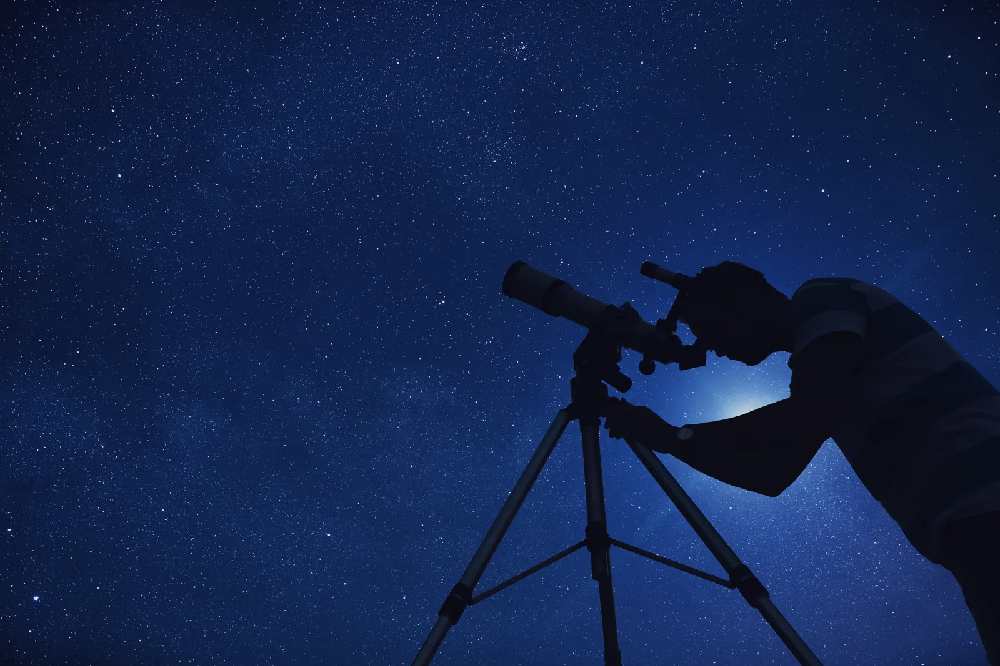

Programme
What’s on
Dome shows run every day except Tuesday. Telescope nights are offered on Thursdays, Fridays and Saturdays — but only on dates the sky here actually reaches astronomical darkness, so they thin out in spring and vanish altogether between 10 May and 2 August.
Building the programme…
What things cost
Admission covers the galleries, the terrace and the grounds. Dome shows and telescope nights are booked on top, and are cheaper if you are already coming in.
Admission
| Ticket | Who it is for | Price |
|---|
Sessions
| Session | Notes | Price |
|---|
Members are admitted free and take — off every session on this page. See membership.
Cloud happens, and we refund it
This is Cumbria. Roughly two telescope nights in five are lost to cloud, and we will not pretend to you that a booking is a guarantee of seeing anything.
If the session cannot run we refund the full amount, automatically, within three working days — you do not need to ask. If it half-runs, because the cloud came in after an hour, you get a free rebooking instead.
The dome shows are indoors and run whatever the sky is doing, which is why we suggest booking one on the same visit.
